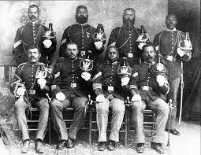
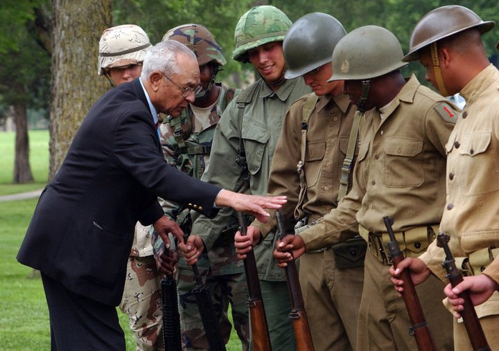

Buffalo Soldiers
Ninth and Tenth Cavalry Association
A Brief History of the Buffalo Soldiers
African Americans have served proudly in every great American war. Over two hundred thousand African American servicemen fought bravely during the Civil War. In 1866 through an act of congress, legislation was adopted to create six all African American army units. The units were identified as the 9th and 10th cavalry and the 38th, 39th, 40th and 41st infantry regiments. The four infantry units were reorganized in 1868 as the 24th and the 25th infantry. Black soldiers enlisted for five years and received $13.00 a month, far more than they could have earned in civilian life.
The 10th cavalry was formed at Fort Leavenworth, Kansas, and recruited soldiers from the northern states. Colonel Benjamin Grierson was selected to command the 10th cavalry. Colonel Edward Hatch was selected to command the 9th cavalry and he recruited soldiers from the south and set up his headquarters in Greenville, Louisiana. The troops were led by white officers. Many officers, including George Armstrong Custer, refused to command black regiments and accepted a lower rank rather than do so. The black regiments could only serve west of the Mississippi River because of the prevailing attitudes following the Civil War.
The Buffalo Soldier’s main charge was to protect settlers as they moved west and to support the westward expansion by building the infrastructure needed for new settlements to flourish. The name “Buffalo Soldiers” has become interesting lore in itself. There seem to be three possible reasons for the name. One, it is said that the curly hair of the soldiers reminded them of the Buffalo. Two, they were given the name because their fierce, brave nature reminded them of the way buffalos fought. Third, it may have been because they wore thick coats made from buffalo hide during winter. Whatever the reason, the term was used respectfully and with honor.
The Buffalo Soldiers of the American West represent members of the 10th Cavalry M Company, organized in 1867 under Commanding Officer, Capt. Alvord. Troopers of the M Company rode mix colored horses—black, brown, bay, gray, chestnut, and at times, other color combinations. Company M, therefore, is known as the Calico Company. The 10th Cavalry mounted units were deactivated in North Africa in 1944.
